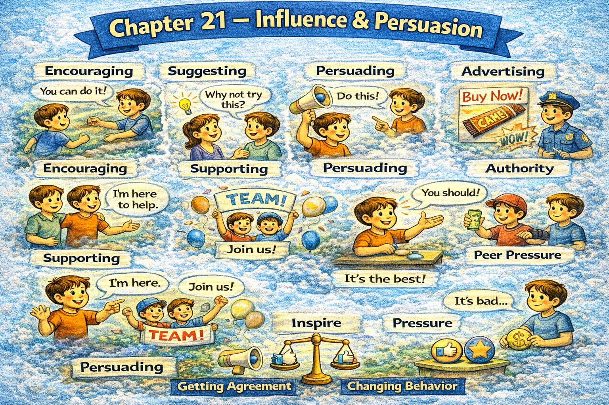

Chapter 21 — Influence & Persuasion

Micro Scene 1 — Framing an Argument
1️⃣ Scene Text
Persuasion often begins with framing.
The way an issue is presented shapes how it is received.
If I emphasize risk, caution increases.
If I emphasize opportunity, motivation rises.
Framing does not change facts; it changes focus.
I choose language that aligns with the listener’s priorities.
When values are acknowledged, resistance decreases.
Effective framing highlights relevance.
Influence depends on alignment between message and concern.
The same data can support different narratives.
Framing guides interpretation before logic unfolds.
2️⃣ Core Verb Pool
begin
present
shape
emphasize
increase
change
choose
align
acknowledge
decrease
highlight
depend
support
guide
3️⃣ Structure Patterns
X begins with + noun
If X + verb, Y + verb
X does not + verb; it + verb
When X + verb, Y + verb
X depends on Y
4️⃣ Replace & Extend
Replace framing angle:
If I frame this as risk…
→ If I frame this as growth…
→ If I frame this as efficiency…
Replace alignment:
Influence depends on alignment.
→ Persuasion depends on shared values.
→ Framing depends on audience priorities.
Replace narrative:
The same facts tell different stories.
→ Data supports multiple narratives.
→ Interpretation follows emphasis.
5️⃣ Spoken Mode
It depends on how we frame this.
If we focus on risk, people slow down.
If we focus on opportunity, they move faster.
The facts are the same — the angle changes.
🔎 Structural Notes
• Framing precedes argument.
• Emphasis = directional influence.
• Narrative controls interpretation.
Micro Scene 2 — Appealing to Values
1️⃣ Scene Text
Persuasion becomes effective when it connects to values.
I identify what the other person prioritizes before presenting my case.
If efficiency matters most, I emphasize optimization.
If stability is the priority, I highlight risk reduction.
Appealing to shared values reduces resistance.
People respond more strongly to arguments that reflect their identity.
When I align my message with existing beliefs, acceptance increases.
Value-based persuasion feels cooperative rather than confrontational.
If the proposal resonates with internal principles, agreement becomes easier.
Influence strengthens when message and value converge.
Understanding priorities precedes persuasion.
2️⃣ Core Verb Pool
connect
identify
prioritize
emphasize
highlight
reduce
respond
reflect
align
increase
resonate
strengthen
precede
3️⃣ Structure Patterns
X becomes + adjective when + clause
If X + verb, Y + verb
People respond to + noun
When X + verb, Y + verb
X precedes + noun
4️⃣ Replace & Extend
Replace priority:
If innovation matters most…
→ If cost control matters most…
→ If long-term growth matters most…
Replace resonance:
If it resonates with their values…
→ If it aligns with their principles…
→ If it reflects their priorities…
Replace convergence:
Influence increases when alignment exists.
→ Persuasion strengthens when values overlap.
→ Agreement grows when identity is acknowledged.
5️⃣ Spoken Mode
People care about what matters to them.
If they value stability, talk about reducing risk.
If they value growth, talk about opportunity.
When your message fits their values, they listen.
🔎 Structural Notes
• “resonate” implies emotional-cognitive alignment.
• Persuasion through value matching, not pressure.
• Identity-level connection increases influence.
Micro Scene 3 — Building Logical Momentum
1️⃣ Scene Text
Strong persuasion builds gradually through structured reasoning.
I present premises in a sequence that leads naturally to the conclusion.
If each step is accepted, resistance decreases incrementally.
Logical momentum develops when agreement accumulates.
I avoid jumping directly to the final claim.
Instead, I construct the argument layer by layer.
When intermediate conclusions are validated, confidence increases.
If the reasoning is coherent, persuasion feels rational rather than forced.
Momentum reduces the need for pressure.
Clear progression strengthens credibility.
Step-by-step alignment produces durable agreement.
2️⃣ Core Verb Pool
build
present
lead
accept
decrease
develop
avoid
construct
validate
increase
reduce
strengthen
produce
3️⃣ Structure Patterns
X builds through + noun
If X + verb, Y + verb
I avoid + verb-ing
Instead,…
When X + verb, Y + verb
X produces + noun
4️⃣ Replace & Extend
Replace progression:
I present the reasoning step by step.
→ I structure the argument sequentially.
→ I guide the listener gradually.
Replace accumulation:
Agreement accumulates over time.
→ Acceptance builds incrementally.
→ Alignment develops progressively.
Replace durability:
Step-by-step agreement lasts longer.
→ Structured reasoning creates stability.
→ Gradual persuasion builds trust.
5️⃣ Spoken Mode
Let’s go step by step.
If you agree with this point, the next one follows.
I’m not jumping to the conclusion — I’m building toward it.
Logical momentum makes persuasion easier.
🔎 Structural Notes
• “layer by layer” signals structured build.
• Incremental agreement reduces friction.
• Momentum replaces pressure.
Micro Scene 4 — Addressing Objections
1️⃣ Scene Text
Effective persuasion anticipates objections before they are voiced.
I identify potential concerns and address them directly.
If resistance is ignored, trust declines.
Acknowledging counterarguments strengthens credibility.
I do not dismiss opposing views; I evaluate them.
When objections are examined openly, defensiveness decreases.
If a limitation exists, I clarify how it is managed.
Transparency reduces suspicion.
Addressing concerns transforms opposition into dialogue.
Confidence grows when doubts are respected.
Persuasion becomes stronger when objections are integrated.
2️⃣ Core Verb Pool
anticipate
identify
address
ignore
decline
acknowledge
strengthen
dismiss
evaluate
examine
decrease
clarify
reduce
transform
respect
integrate
3️⃣ Structure Patterns
X anticipates + noun
If X + verb, Y + verb
I do not + verb; I + verb
When X + verb, Y + verb
If X exists, Y + verb
X transforms A into B
4️⃣ Replace & Extend
Replace objection:
Some may argue that…
→ A possible concern is…
→ One limitation is…
Replace transparency:
I acknowledge the risk.
→ I recognize the drawback.
→ I clarify the constraint.
Replace integration:
Addressing concerns builds trust.
→ Recognizing limits increases credibility.
→ Transparency strengthens persuasion.
5️⃣ Spoken Mode
You might be concerned about the risk.
That’s a fair point — here’s how we manage it.
I’m not ignoring the drawback.
When concerns are addressed, trust grows.
🔎 Structural Notes
• “Some may argue that…” pre-empts objection.
• Respecting doubt increases influence.
• Integration > avoidance.
Micro Scene 5 — Emotional Influence
1️⃣ Scene Text
Persuasion is not purely logical; it is also emotional.
Emotion directs attention before analysis begins.
If a message evokes fear, caution increases.
If it evokes hope, motivation expands.
I remain aware of emotional tone when presenting an argument.
Stories often influence more deeply than statistics alone.
When people feel understood, openness increases.
Emotion can amplify or distort reasoning.
If emotional intensity rises too high, rational evaluation declines.
Effective persuasion balances logic with emotional resonance.
Connection often precedes conviction.
2️⃣ Core Verb Pool
direct
begin
evoke
increase
expand
remain
influence
feel
amplify
distort
rise
decline
balance
precede
3️⃣ Structure Patterns
X is not purely A; it is also B
If X + verb, Y + verb
When X + verb, Y + verb
X can + verb
X balances A with B
X precedes + noun
4️⃣ Replace & Extend
Replace emotion:
If the message evokes urgency…
→ If the message evokes trust…
→ If the message evokes pride…
Replace resonance:
Emotional resonance strengthens persuasion.
→ Emotional connection increases openness.
→ Emotional clarity enhances alignment.
Replace balance:
Persuasion requires emotional and logical balance.
→ Influence combines reason and feeling.
→ Effective messaging integrates data and story.
5️⃣ Spoken Mode
People don’t respond to logic alone.
If they feel understood, they listen more.
Stories move people faster than numbers.
Emotion matters — but it needs balance.
🔎 Structural Notes
• “not purely…, also…” expresses dual structure.
• Emotion shapes cognitive entry point.
• Balance prevents manipulation.
Micro Scene 6 — Ethical Influence
1️⃣ Scene Text
Influence carries ethical responsibility.
Persuasion should respect autonomy rather than override it.
If influence relies on deception, trust deteriorates.
I distinguish between guiding and manipulating.
Ethical persuasion presents information transparently.
When consent is preserved, influence becomes collaborative.
Coercion produces compliance but weakens long-term trust.
If short-term gain sacrifices credibility, damage accumulates.
Integrity limits persuasive tactics.
Influence is strongest when aligned with shared benefit.
Sustainable persuasion respects freedom.
2️⃣ Core Verb Pool
carry
respect
override
rely
deteriorate
distinguish
present
preserve
produce
weaken
sacrifice
accumulate
limit
align
3️⃣ Structure Patterns
X carries + noun
If X + verb, Y + verb
I distinguish between A and B
When X + verb, Y + verb
X produces A but weakens B
X is strongest when + clause
4️⃣ Replace & Extend
Replace manipulation:
I avoid manipulative tactics.
→ I avoid misleading framing.
→ I avoid emotional coercion.
Replace sustainability:
Short-term pressure weakens trust.
→ Immediate gain harms credibility.
→ Forced agreement reduces respect.
Replace alignment:
Influence aligns with shared benefit.
→ Persuasion works best when interests overlap.
→ Ethical influence builds mutual advantage.
5️⃣ Spoken Mode
Influence comes with responsibility.
If I manipulate, I lose trust.
I want agreement — not compliance.
Persuasion should respect freedom.
Long-term trust matters more than short-term wins.
🔎 Structural Notes
• “guiding vs manipulating” defines ethical boundary.
• “compliance vs trust” contrasts short-term vs long-term effect.
• Ethics stabilizes influence.
🔸 Integration Scene — Influence Structure
Framing shapes perception.
Values drive acceptance.
Logical momentum builds agreement.
Objections strengthen credibility.
Emotion directs attention.
Ethics sustains trust.
Influence depends on alignment.
Manipulation weakens credibility.
Transparency increases persuasion.
Connection precedes conviction.
Reciprocity builds stability.
Narrative guides interpretation.
Balance prevents distortion.
Integrity limits tactics.
Sustainable influence respects autonomy.
Persuasion shapes direction.
Integration Verb Focus
frame
align
convince
anticipate
resonate
balance
integrate
respect